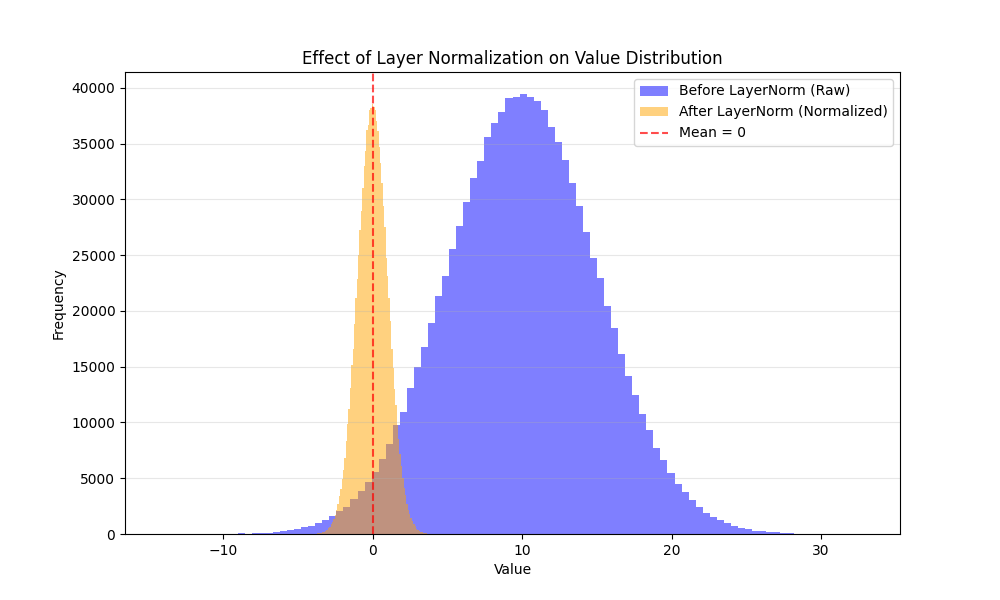

Issues with BatchNorm that LayerNorm Addresses
LayerNorm addresses some short-comings from BatchNorm, which are:
- RNNs or any language-based tasks might have different sequences/lengths of data We can't simply calculate the statistics across our batches, we also need to consider the time steps.
- As BatchNorm calculates statistics across the batch for each feature, the batch sizes need to be relatively large.
- Lastly, we can't apply BatchNorm to online learning (batchsize=1) so as a result we need to cache/store some sort of statistic for inference.
Layer Normalization
- LayerNorm computes the normalization statistics over/across all features instead for each feature (BatchNorm).
- Formally, they define the statistics as and , where stands for the th layer, as the inputs to the hidden layer, and as the number of hidden units in the layer.
- Therefore, we are now normalizing across the layers (hidden units) and getting a statistic for each layer, where each sample will now have some statistic across its feature dimension.
- I know the wording of this may be quite confusing so I'll provide a quick example, say we have an input to the layer of , so the input is of batch size of 32, 3 has channels, and are 64 x 64 images.
- If we perform BatchNorm for this input, we are calculating the statistics for each feature across the batch, so we will calculate statistics as the feature size are the channels for our input and the dimension of the statistics will be , assuming we flatten the 64 x 64 image to one vector.
- If we perform LayerNorm for this input, we are calculating the statistics for each sample in the batch across all features, so we will instead calculate statistics for our input, and the dimension being , again assuming we flatten the image.
- This image may give a better visualization of how Batch/LayerNorms differ and also an intuitive understanding of why using LayerNorm is the obvious choice for Language modeling.

-
First of all, assume that we are conducting BatchNorm across some input of the language. Then, we are essentially normalizing across the batch for a specific feature vector, which is problematic. For example, assume these two sentences are in a batch: 1. The cat meows. 2. The barking dog looks at the cat.
-
We are essentially calculating a statistic that takes the same parts of the sentences and trying to normalize these them across the batch. So in this case, the representation of "cat" depends on "barking" as they are in the same position of the sentence, which is not what we want as we want each representation of the word to be embedded in the context of its own sentance.
-
Another issue that we can see is that sentances have different lengths. Representing two sentences with different lengths are problematic as we will have to pad some spaces, which will affect the statistics for words in longer sentances. In the case of our example, there simply would be no statistics to calculate for "looks at the cat".
-
Therefore, it makes sense to use LayerNorm, where we calculate the statistics across the feature instead of the batches. For our first sentence, "cat" will have its own representation and be normalized within its feature space. So assuming that the features space is of size , we will calculate some and for the word "cat" and normalize that feature vector instead.
-
This way, it is possible to get representations of the words in context with its sentence and order, and also reducing internal covariance shifts.
-
I won't mention too much about the internal covariance shifts as it is covered in detail in my BatchNorm post.
Implementation Details
- The implementation will be pretty straight-forward, as it is similiar to BatchNorm.
class LayerNorm(nn.Module):
def __init__(self, eps=1e-5):
super().__init__()
self.eps = eps
def forward(self, x):
batch_size, length, feature_dim = x.shape
output = torch.zeros_like(x)
for i in range(batch_size):
for t in range(length):
word_vector = x[i, t, :]
mu = word_vector.sum() / feature_dim
var = ((word_vector - mu) ** 2).sum() / feature_dim
output[i, t, :] = (word_vector - mu) / torch.sqrt(var + self.eps)
return output
- Here we can try testing out if the layernorm is actually working properly.
# Assume feature vecs from a batch 32, sentence of length 64, and feature dim. of 512.
# We want to normalize across each word in a batch.
# randn() -> between 0 and 1 so now mean = 10 and var = 5
sample_batch = torch.randn(32, 64, 512) * 5 + 10
print(sample_batch[0, 0, :])
ln_layer = LayerNorm()
out = ln_layer.forward(sample_batch)
print(f"dim(out): {out.shape}") # >>> (32, 64, 512)
print(out[0, 0, :])
- If we directly compare the first input of the batch so,
sample_batch[0, 0, :], we can see the shift in distribution. Recall thattorch.randgenerates a value in between 0 and 1 and we scaled the sample batch to a Gaussian distribution. - Here we can visually see the effect of LayerNorm on the feature vector for the inputs. Following the example from before, we transformed the feature vector of "cat" to a normalized feature vector.

- In terms of iteration and improving the code, we can utilize torch functions that we used from implementing BatchNorm to clean up our code. Specifically,
torch.mean(*kwargs, keep_dim=True). If you could recall,keep_dim=Truepreserves the dimensions when taking the mean. So the implementation looks like this:
class LayerNorm2(nn.Module):
def __init__(self, eps=1e-5):
super().__init__()
self.eps = eps
def forward(self, x):
batch_size, length, feature_dim = x.shape
output = torch.zeros_like(x)
# dim=-1 so we squish along last idx(feature_dim)
# keep_dim=True so we get (batch_size, length, 1)
mu = x.mean(dim=-1, keep_dim=True)
var = x.var(dim=-1, keep_dim=True)
output = (x - mu) / torch.sqrt(var + self.eps)
return output